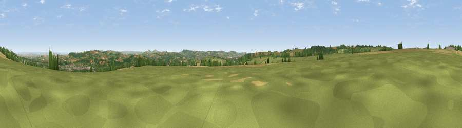

Viewpoint near Chard
#14127 in England · top 31% of its area beats it · near ChardThe view, rendered

A 360° render of this exact spot computed from the terrain model, tree cover and land cover — summer colours, afternoon light, calibrated against photographs of famous viewpoints. Real trees, hedges and buildings will differ in detail.
The panorama
Grey silhouette: terrain skyline in each direction (720 bearings, Earth curvature and refraction included). Dashed green: skyline with trees (+15 m) and buildings (+8 m) as obstacles. Blue strip: how far the ground is visible on each bearing.
Where the view opens
Wedge length = distance to the farthest visible ground on that bearing (vegetation-aware). Rings at 10, 25 and 50 km.
What fills the view
56% grassland · 21% woodland · 19% cropland · 3% built-up
Angular shares of the visible panorama (visual magnitude), not map area. Landscape diversity 0.47 (0–1 Shannon).
Key numbers
More beautiful places nearby
The staircase of upgrades: each row has a higher view potential than everything closer. Driving times are estimates from straight-line distance, calibrated against real road routing — check an actual route before setting out.
| Place | Direction | Drive | Score |
|---|---|---|---|
| Viewpoint near Yarcombe | W · 3 km | ~8 min | 59.0 |
| Viewpoint near Membury | SW · 3 km | ~8 min | 65.0 |
| Viewpoint near Wadeford | N · 4 km | ~10 min | 65.5 |
| Viewpoint near Combe St Nicholas | NNW · 5 km | ~11 min | 67.9 |
| Viewpoint near Chaffcombe | NE · 6 km | ~13 min | 68.8 |
| Viewpoint near Dowlish Wake | ENE · 8 km | ~15 min | 70.0 |
| Viewpoint near Buckland St. Mary | NNW · 8 km | ~17 min | 72.2 |
| Viewpoint near Buckland St. Mary | NNW · 9 km | ~18 min | 77.3 |
50.86309, -2.98215 · source: screening · position refined by local search. Computed location — check access rights before visiting.